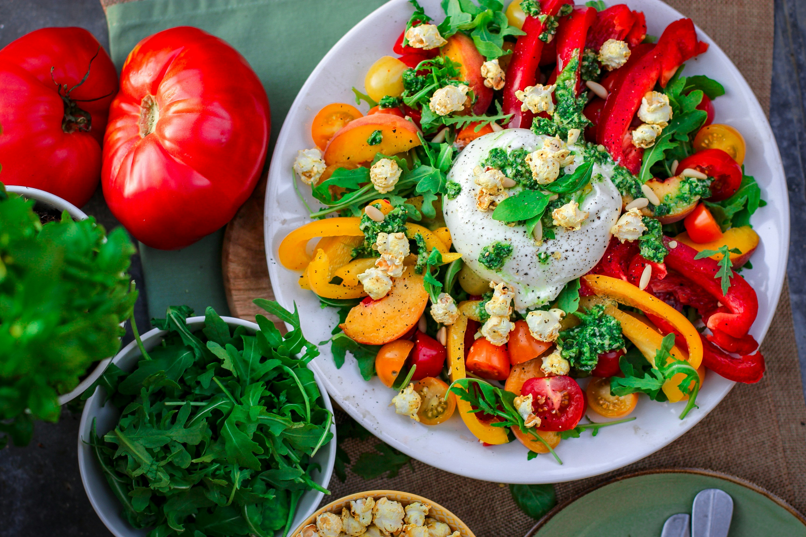
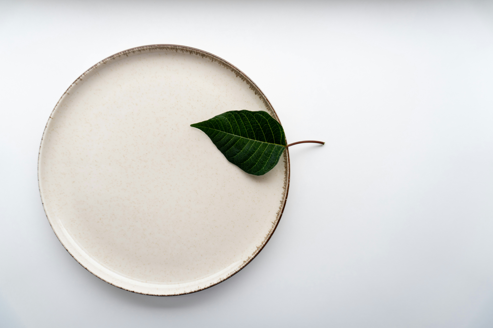

Hamburguer Com fritas

Delicioso hamburguer com batatas fritas artesanais, hamburguer de carne bovina 300g, queijo cheddar, cebola roxa, maionese caseira, tomate e alface.
Hamburguer

Dois suculentos hambúrgueres bovinos, dupla camada de queijo derretido, picles, cebola fresca e o nosso molho especial no pão brioche tostado.
Macarrão com camarão

Massa ao ponto perfeitamente temperada com camarões salteados na manteiga, tomates cereja frescos e um toque de ervas finas.
Macarrão

Clássico macarrão gravatinha envolvido em um delicioso molho pesto de manjericão, finalizado com tomates cereja. Leve e cheio de sabor.
Salada

Uma combinação colorida e refrescante de folhas verdes, tomates maduros, pimentões amarelos e um queijo cremoso no centro para harmonizar.
Folha

Exclusiva e raríssima folha verde, cultivada em estufa de cristal nos Alpes Suíços e regada apenas com água mineral importada. Uma experiência gastronômica minimalista de alto luxo.